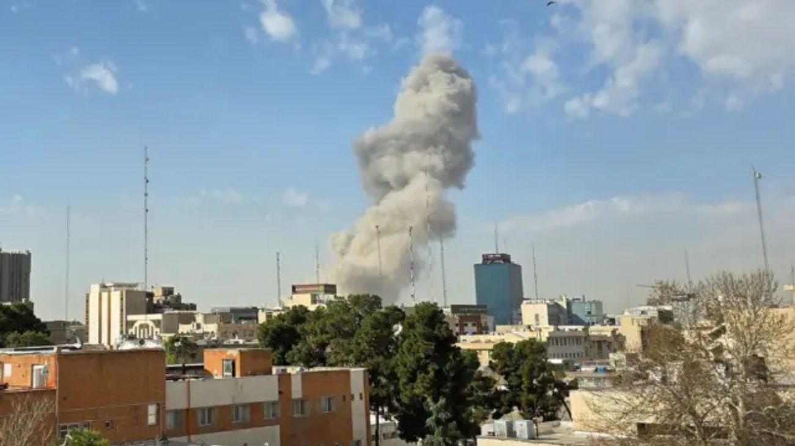

Israel lanza una ofensiva estratégica contra infraestructuras clave en territorio iraní
El Ejército de Israel ha ejecutado un ataque preventivo de gran escala contra objetivos militares y estratégicos en Irán, con el propósito de neutralizar amenazas inminentes y debilitar la capacidad operativa del régimen en la región.

La operación militar se centró en la destrucción de instalaciones vinculadas al programa de misiles balísticos y centros de comando de la Guardia Revolucionaria, buscando desarticular la infraestructura que sustenta las operaciones ofensivas de Teherán. Según los reportes iniciales, las incursiones aéreas lograron impactar con precisión puntos neurálgicos, provocando importantes daños materiales y una interrupción significativa en las cadenas de mando militares iraníes.
Este movimiento táctico responde a un incremento en las tensiones y a informes de inteligencia que alertaban sobre preparativos para acciones hostiles contra territorio israelí.
El gobierno de Benjamín Netanyahu justificó la intervención como una medida de autodefensa necesaria para garantizar la seguridad nacional, subrayando que no permitirán que el régimen persa continúe expandiendo su influencia bélica de manera impune cerca de sus fronteras.
Por su parte, el régimen de Irán reaccionó denunciando la incursión como una violación flagrante de su soberanía y activando sus sistemas de defensa en las principales ciudades del país. Mientras el humo se elevaba sobre diversos puntos de Teherán, las autoridades locales instaron a la población a permanecer en refugios, mientras se evalúan las consecuencias de lo que expertos internacionales describen como una de las agresiones más directas en la historia reciente entre ambas potencias.
La comunidad internacional observa con preocupación este desarrollo, que amenaza con desencadenar una escalada de violencia sin precedentes en Medio Oriente. Diversos países han hecho un llamado a la moderación, advirtiendo que la clausura de rutas comerciales críticas como el Estrecho de Ormuz y el inicio de ataques de represalia podrían desestabilizar no solo la región, sino también la economía global y la seguridad energética mundial.